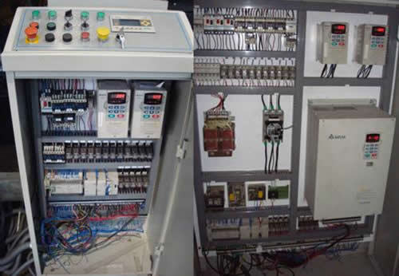

今日点点滴滴的记录
明日都将成为你最宝贵的财富
如何学习电控柜方面的知识
来到工作中，总是要学习很多的新东西，而有些东西甚至是你从来没有接触过的。所以我们平时应该锻炼自己的学习能力。比如可以每天抽出两个小时，坚持两个月，学习一门新知识，进入到一个新领域。从刚进去什么也不会，到慢慢的能看明白一点了，再到慢慢的好像有点了解它的原理了，最后到能够理解比较简单的一个系统总体。这种循序渐进学习的感觉特别好，学习摸索多了，你总是从中找到好的学习新东西的方法，获得宝贵的经验。
就像我大学学的是选矿加工专业，来到公司，需要学习工业电路的一些知识。来到电控部实习的第一天，看到那些电器元件和各种颜色线号的线，心里就在想，都是些什么东西。看到那些凌乱的线，经过他们的手，一些变成艺术品了，感觉他们好厉害啊。

组装电控柜前，首先应该会看电路图（因为电控柜为了美观，提前将各种电器排布好的，你需要的就是用电线将各种电器相互连接，而怎样连就需要看电路图了，）一看电路图，上面有各种线，图形符号，文字符号。刚开始不需要管他们之间什么关系，只要知道每一个图形符号和文字符号表示什么电器，能够说出它的名字（因为对于一个新东西，一旦你能够说出它的名字了，那你就会很容易注意到它了，也就有继续学习的动力，设想一个东西，你一直和它接触，可是你连它叫什么都不知道，你还会愿意去学它吗，你的大脑意识会让你主动忽略它因为困难）。
至于它有什么用，工作原理是什么这个我们先放一放，因为我们的目的是要先用电线将他们正确的连接到一起，当我们知道电器的名称后，就得找出它所对应的实物图，知道实物图上的各种接口对应到电路图上的那些接口，这样我们就可以把他们组装上了。当我们会组装后了，就有一个整体的概念了。
接下来就可以进一步了解每一个电气设备的用途和工作原理，了解后，接下来就可以尝试将它们合到一起理解，了解大致的工作原理。从单一，到模块，再到总体。可以照着电路图，将线路过一遍。


总结：
1.知道每个小电器件叫什么名字，用什么电路符号，文字符号表示。（因为知道叫什么，你才回有兴趣接下去干）
2.不管为什么，依葫芦画瓢，高仿一个出来，了解大概的流程，有个总体印象。
3.接下来逐个击破，不仅要知道每个电器件叫什么名字，还得知道的工作原理，结构构造，背景（为什么会创造出这样的一个电器见出来）
 。
。
4.能够看懂简单的原理图，尝试着理解一个简单的整体系统，知道每一个线的含义，每个元器件的作用，整体实现一个什么样的功能。。
3
5.最后试着自己动手做一个出来，能够自己独立做一个出来，基本上就已经入门了，往后就是不断积累，不断实践，逐渐拓宽（接触更多种类的器件），拓深（接触更复杂的系统）。